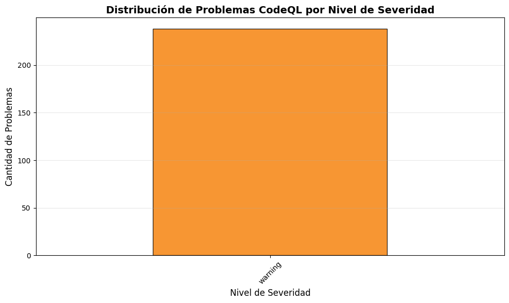
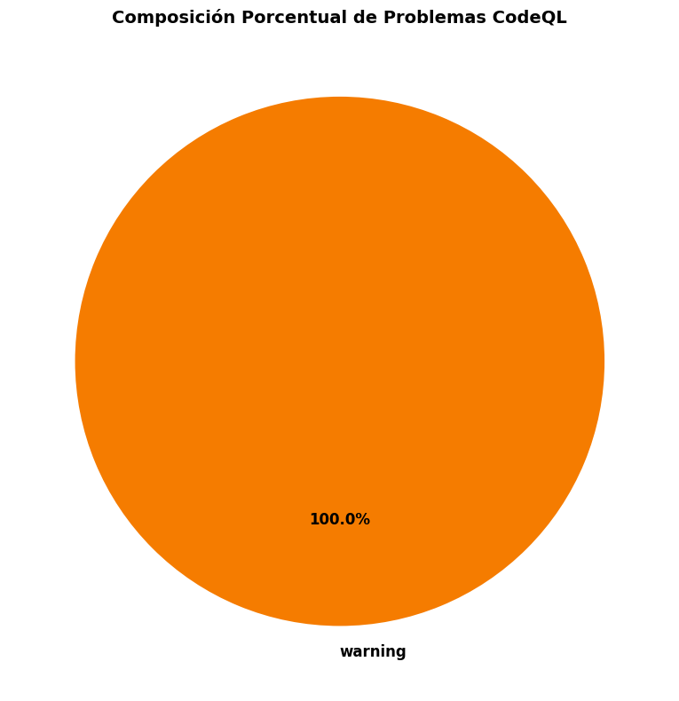
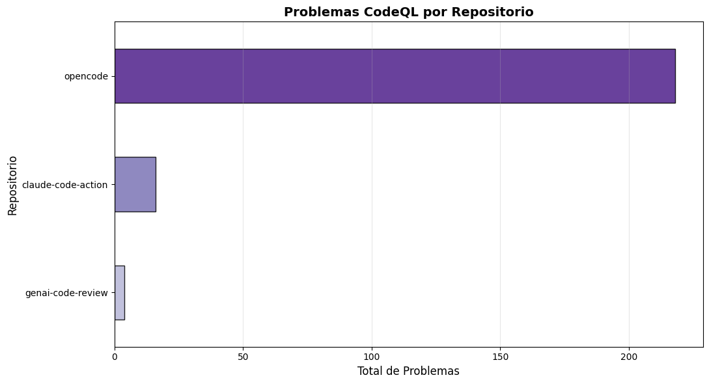
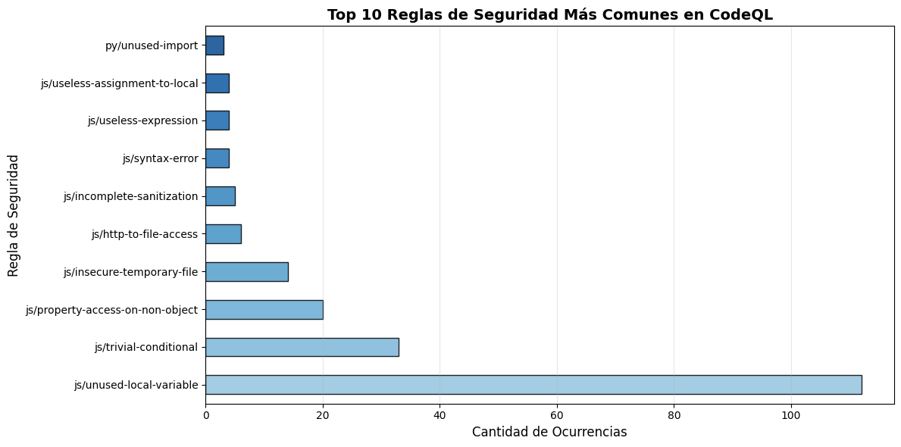
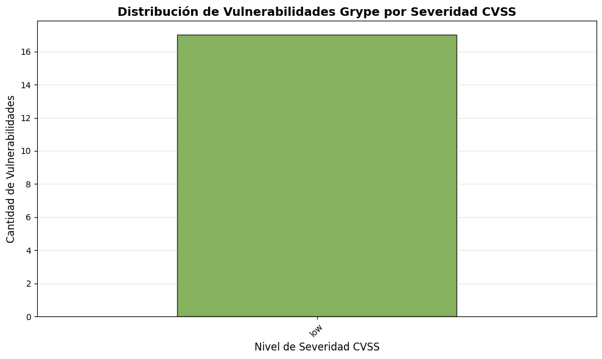
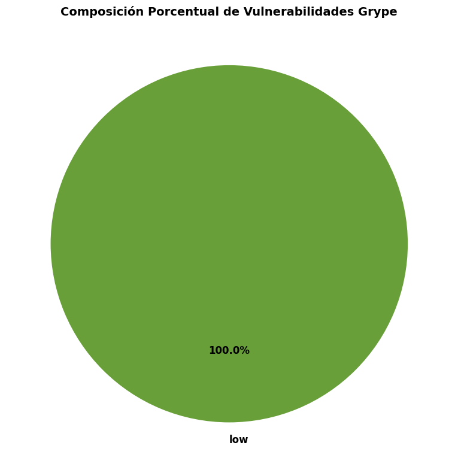
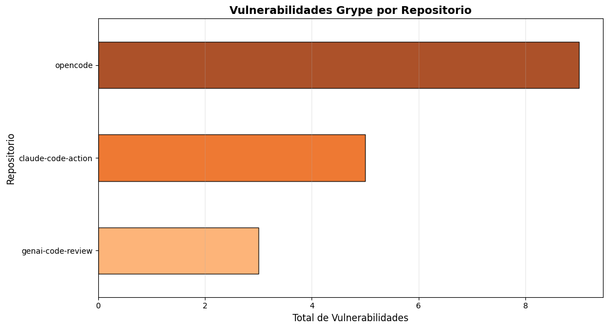
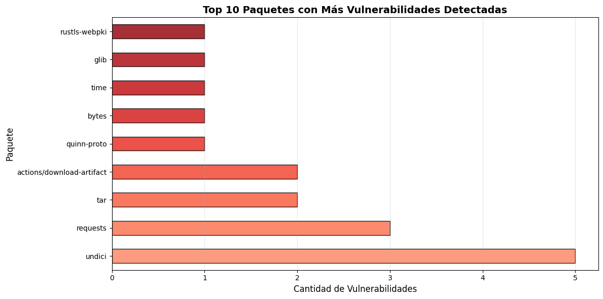

Este notebook presenta un descriptivo de los resultados obtenidos durante la extracción de vulnerabilidades:
CodeQL: Análisis estático de código (SAST) - identifica vulnerabilidades en el código fuente
Grype: Análisis de componentes de software (SCA) - identifica vulnerabilidades en dependencias
Análisis CodeQL: Vulnerabilidades en Código Fuente
¿De dónde vienen los datos?
CodeQL ejecuta análisis estático sobre el código fuente y genera resultados en formato SARIF v2.1.0 (formato estándar de la industria para reportes de análisis de seguridad).
Mapeo de datos: SARIF -> JSON normalizado
Dato original (SARIF)
Dato normalizado
Significado
level
level
Severidad del problema: "error" (crítico), "warning" (medio), "note" (bajo)
ruleId
rule_id
Identificador de la regla de seguridad violada (ej: py/sql-injection)
message.text
message
Descripción legible del problema
location.physicalLocation
file + region
Ubicación exacta: archivo y línea/columna afectada
kind, properties
Se preservan
Información adicional para debugging
Decisión de diseño
Se mantiene el level exactamente como lo proporciona SARIF, sin transformación adicional. A diferencia de Grype (que mapea números a categorías), CodeQL ya viene categorizado.
Visualizaciones esperadas
Distribución de problemas por severidad (error/warning/note)
Reglas más comunes encontradas
import sysfrom pathlib import Pathimport jsonimport pandas as pdimport numpy as npimport matplotlib.pyplot as plt# Setup de rutasproject_root = Path().cwd().parent.parentdata_results = project_root /"data"/"results"print(f"📁 Directorio de resultados: {data_results}")print(f"✓ Proyecto raíz: {project_root}")
📁 Directorio de resultados: /workspaces/ciberseguridad_2026/data/results
✓ Proyecto raíz: /workspaces/ciberseguridad_2026
# Cargar todos los análisis CodeQLcodeql_files =sorted(data_results.glob("*-codeql.json"))print(f"\n📂 Buscando archivos CodeQL en: {data_results}")print(f"✓ Archivos encontrados: {len(codeql_files)}\n")# Consolidar en un solo DataFramedata_consolidado = []for archivo in codeql_files:withopen(archivo, 'r', encoding='utf-8') as f: contenido = json.load(f) repo_name = archivo.stem.replace('-codeql', '') issues = contenido.get('issues', [])for issue in issues: issue['repo'] = repo_name data_consolidado.append(issue)df_codeql = pd.DataFrame(data_consolidado)print(f"📊 Total de problemas cargados: {len(df_codeql)}")print(f"📋 Repositorios únicos: {df_codeql['repo'].nunique() iflen(df_codeql) >0else0}\n")
📂 Buscando archivos CodeQL en: /workspaces/ciberseguridad_2026/data/results
✓ Archivos encontrados: 3
📊 Total de problemas cargados: 238
📋 Repositorios únicos: 3
# Estadísticas por severidadiflen(df_codeql) >0: stats_severity = df_codeql['level'].value_counts().sort_index(ascending=False)print("📊 Problemas por Nivel de Severidad:")print("="*50)for nivel, cantidad in stats_severity.items(): emoji ="🔴"if nivel =="error"else"🟡"if nivel =="warning"else"⚪" porcentaje = (cantidad /len(df_codeql)) *100print(f"{emoji}{nivel.upper()}: {cantidad} ({porcentaje:.1f}%)")print(f"\n📈 Total general: {len(df_codeql)} problemas encontrados")else:print("❌ No hay datos de CodeQL disponibles")
📊 Problemas por Nivel de Severidad:
==================================================
🟡 WARNING: 238 (100.0%)
📈 Total general: 238 problemas encontrados
# Gráfico: Distribución por severidadiflen(df_codeql) >0: fig, ax = plt.subplots(figsize=(10, 6)) stats_severity = df_codeql['level'].value_counts().sort_index(ascending=False)# Colores según severidad colores = {'error': '#d32f2f', 'warning': '#f57c00', 'note': '#7cb342'} color_list = [colores.get(nivel, '#757575') for nivel in stats_severity.index] stats_severity.plot(kind='bar', ax=ax, color=color_list, edgecolor='black', alpha=0.8) ax.set_title('Distribución de Problemas CodeQL por Nivel de Severidad', fontsize=14, fontweight='bold') ax.set_xlabel('Nivel de Severidad', fontsize=12) ax.set_ylabel('Cantidad de Problemas', fontsize=12) ax.set_xticklabels(ax.get_xticklabels(), rotation=45) ax.grid(axis='y', alpha=0.3) plt.tight_layout() plt.show()else:print("❌ No hay datos disponibles para graficar")

# Gráfico: Composición por severidadiflen(df_codeql) >0: fig, ax = plt.subplots(figsize=(10, 8)) stats_severity = df_codeql['level'].value_counts() colores = {'error': '#d32f2f', 'warning': '#f57c00', 'note': '#7cb342'} color_list = [colores.get(nivel, '#757575') for nivel in stats_severity.index] wedges, texts, autotexts = ax.pie( stats_severity.values, labels=stats_severity.index, autopct='%1.1f%%', colors=color_list, startangle=90, textprops={'fontsize': 12, 'weight': 'bold'} ) ax.set_title('Composición Porcentual de Problemas CodeQL', fontsize=14, fontweight='bold') plt.tight_layout() plt.show()else:print("❌ No hay datos disponibles para graficar")

# Gráfico: Problemas por repositorio (CodeQL)iflen(df_codeql) >0: fig, ax = plt.subplots(figsize=(11, 6)) issues_por_repo = df_codeql['repo'].value_counts().sort_values(ascending=True)# Colores del gradiente (más oscuro = más issues) colores_gradiente = plt.cm.Purples(np.linspace(0.4, 0.9, len(issues_por_repo))) issues_por_repo.plot(kind='barh', ax=ax, color=colores_gradiente, edgecolor='black', alpha=0.85) ax.set_title('Problemas CodeQL por Repositorio', fontsize=14, fontweight='bold') ax.set_xlabel('Total de Problemas', fontsize=12) ax.set_ylabel('Repositorio', fontsize=12) ax.grid(axis='x', alpha=0.3) plt.tight_layout() plt.show()else:print("❌ No hay datos disponibles para graficar")

# Top 5 reglas más comunesiflen(df_codeql) >0: top_rules = df_codeql['rule_id'].value_counts().head(10)print("\n🎯 Top 10 Reglas de Seguridad Más Frecuentes:")print("="*70)for idx, (rule, count) inenumerate(top_rules.items(), 1): porcentaje = (count /len(df_codeql)) *100print(f"{idx:2d}. {rule:40s}{count:3d} ({porcentaje:5.1f}%)")else:print("❌ No hay datos disponibles")
# Gráfico: Top 10 reglas más comunesiflen(df_codeql) >0: fig, ax = plt.subplots(figsize=(12, 6)) top_rules = df_codeql['rule_id'].value_counts().head(10)# Colores del gradiente (más oscuro = más frecuente) colores_gradiente = plt.cm.Blues(np.linspace(0.4, 0.9, len(top_rules))) top_rules.plot(kind='barh', ax=ax, color=colores_gradiente, edgecolor='black', alpha=0.85) ax.set_title('Top 10 Reglas de Seguridad Más Comunes en CodeQL', fontsize=14, fontweight='bold') ax.set_xlabel('Cantidad de Ocurrencias', fontsize=12) ax.set_ylabel('Regla de Seguridad', fontsize=12) ax.grid(axis='x', alpha=0.3) plt.tight_layout() plt.show()else:print("❌ No hay datos disponibles para graficar")

Análisis Grype: Vulnerabilidades en Dependencias
¿De dónde vienen los datos?
Grype escanea fuentes de dependencias (package.json, requirements.txt, pom.xml, etc.) y las compara contra bases de datos de vulnerabilidades conocidas (CVE, NVD). Devuelve resultados en JSON con información de cada vulnerabilidad encontrada.
Mapeo de datos: JSON de Grype -> JSON normalizado
Dato original (Grype)
Dato normalizado
Significado
artifact.name
package_name
Nombre de la librería vulnerable (ej: django, lodash)
artifact.version
current_version
Versión de la librería actualmente instalada
vulnerability.id
vuln_id
Identificador único: CVE-XXXX-XXXXX o equivalente
metadata.cvss[0].score
cvss_score
Puntuación CVSS 0.0-10.0 (escala de severidad numérica)
—
vuln_severity
MAPEO: CVSS→categoría: critical (≥9.0), high (≥7.0), medium (≥4.0), low (<4.0)
fix.versions[0]
fix_version
Versión con el parche disponible (o “N/A” si no hay)
vulnerability.description
message
Descripción del problema
Decisión de diseño
Se realiza transformación CVSS score -> severidad para mayor legibilidad, pero se preservan AMBOS valores. Esto permite:
Comparar fácilmente con SLAs (“critical en 24h, high en 72h”)
Mantener precisión para usuarios avanzados (CVSS score exacto)
Visualizaciones esperadas
Distribución de vulnerabilidades por severidad CVSS
Paquetes más vulnerables del proyecto
# Cargar todos los análisis Grypegrype_files =sorted(data_results.glob("*-grype.json"))print(f"\n📂 Buscando archivos Grype en: {data_results}")print(f"✓ Archivos encontrados: {len(grype_files)}\n")# Consolidar en un solo DataFramedata_grype = []for archivo in grype_files:withopen(archivo, 'r', encoding='utf-8') as f: contenido = json.load(f) repo_name = archivo.stem.replace('-grype', '') vulns = contenido.get('vulnerabilities', [])for vuln in vulns: vuln['repo'] = repo_name data_grype.append(vuln)df_grype = pd.DataFrame(data_grype)print(f"📊 Total de vulnerabilidades cargadas: {len(df_grype)}")print(f"📋 Repositorios únicos: {df_grype['repo'].nunique() iflen(df_grype) >0else0}\n")
📂 Buscando archivos Grype en: /workspaces/ciberseguridad_2026/data/results
✓ Archivos encontrados: 3
📊 Total de vulnerabilidades cargadas: 17
📋 Repositorios únicos: 3
# Estadísticas por severidad (con rangos CVSS)iflen(df_grype) >0: stats_severity = df_grype['vuln_severity'].value_counts()# Mapeo de rangos CVSS cvss_ranges = {'critical': '9.0 - 10.0','high': '7.0 - 8.9','medium': '4.0 - 6.9','low': '0.0 - 3.9' }print("🔴 Vulnerabilidades por Nivel de Severidad CVSS:")print("="*60)print(f"{'Severidad':<12}{'Cantidad':<10}{'Rango CVSS':<15}{'%':<8}")print("="*60)for severidad in ['critical', 'high', 'medium', 'low']: cantidad = stats_severity.get(severidad, 0) porcentaje = (cantidad /len(df_grype) *100) iflen(df_grype) >0else0 rango = cvss_ranges.get(severidad, 'N/A') emoji ="🔴"if severidad =="critical"else"🟠"if severidad =="high"else"🟡"if severidad =="medium"else"⚪"print(f"{emoji}{severidad:<10}{cantidad:<10}{rango:<15}{porcentaje:>6.1f}%")print("="*60)print(f"📈 Total general: {len(df_grype)} vulnerabilidades encontradas")else:print("❌ No hay datos de Grype disponibles")
🔴 Vulnerabilidades por Nivel de Severidad CVSS:
============================================================
Severidad Cantidad Rango CVSS %
============================================================
🔴 critical 0 9.0 - 10.0 0.0%
🟠 high 0 7.0 - 8.9 0.0%
🟡 medium 0 4.0 - 6.9 0.0%
⚪ low 17 0.0 - 3.9 100.0%
============================================================
📈 Total general: 17 vulnerabilidades encontradas
# Gráfico: Distribución por severidadiflen(df_grype) >0: fig, ax = plt.subplots(figsize=(10, 6))# Ordenar correctamente: critical > high > medium > low severidad_order = ['critical', 'high', 'medium', 'low'] stats_severity = df_grype['vuln_severity'].value_counts() stats_severity = stats_severity.reindex([s for s in severidad_order if s in stats_severity.index])# Colores según severidad colores = {'critical': '#b71c1c', 'high': '#e64a19', 'medium': '#fbc02d', 'low': '#689f38'} color_list = [colores.get(nivel, '#757575') for nivel in stats_severity.index] stats_severity.plot(kind='bar', ax=ax, color=color_list, edgecolor='black', alpha=0.8) ax.set_title('Distribución de Vulnerabilidades Grype por Severidad CVSS', fontsize=14, fontweight='bold') ax.set_xlabel('Nivel de Severidad CVSS', fontsize=12) ax.set_ylabel('Cantidad de Vulnerabilidades', fontsize=12) ax.set_xticklabels(ax.get_xticklabels(), rotation=45) ax.grid(axis='y', alpha=0.3) plt.tight_layout() plt.show()else:print("❌ No hay datos disponibles para graficar")

# Gráfico: Composición por severidadiflen(df_grype) >0: fig, ax = plt.subplots(figsize=(10, 8))# Ordenar correctamente severidad_order = ['critical', 'high', 'medium', 'low'] stats_severity = df_grype['vuln_severity'].value_counts() stats_severity = stats_severity.reindex([s for s in severidad_order if s in stats_severity.index]) colores = {'critical': '#b71c1c', 'high': '#e64a19', 'medium': '#fbc02d', 'low': '#689f38'} color_list = [colores.get(nivel, '#757575') for nivel in stats_severity.index] wedges, texts, autotexts = ax.pie( stats_severity.values, labels=stats_severity.index, autopct='%1.1f%%', colors=color_list, startangle=90, textprops={'fontsize': 12, 'weight': 'bold'} ) ax.set_title('Composición Porcentual de Vulnerabilidades Grype', fontsize=14, fontweight='bold') plt.tight_layout() plt.show()else:print("❌ No hay datos disponibles para graficar")

# Gráfico: Vulnerabilidades por repositorio (Grype)iflen(df_grype) >0: fig, ax = plt.subplots(figsize=(11, 6)) vulns_por_repo = df_grype['repo'].value_counts().sort_values(ascending=True)# Colores del gradiente (más oscuro = más vulns) colores_gradiente = plt.cm.Oranges(np.linspace(0.4, 0.9, len(vulns_por_repo))) vulns_por_repo.plot(kind='barh', ax=ax, color=colores_gradiente, edgecolor='black', alpha=0.85) ax.set_title('Vulnerabilidades Grype por Repositorio', fontsize=14, fontweight='bold') ax.set_xlabel('Total de Vulnerabilidades', fontsize=12) ax.set_ylabel('Repositorio', fontsize=12) ax.grid(axis='x', alpha=0.3) plt.tight_layout() plt.show()else:print("❌ No hay datos disponibles para graficar")

# Top 5 paquetes más vulnerablesiflen(df_grype) >0:# Agrupar por paquete y mostrar info relevante top_packages = df_grype['package_name'].value_counts().head(10)print("\n📦 Top 10 Paquetes con Más Vulnerabilidades:")print("="*80)print(f"{'Paquete':<30}{'Vulns':<10}{'Vers. Actual':<15}{'Fix?':<8}")print("="*80)for pkg_name in top_packages.index: pkg_data = df_grype[df_grype['package_name'] == pkg_name].iloc[0] cantidad = top_packages[pkg_name] version = pkg_data.get('current_version', 'N/A') fix = pkg_data.get('fix_version', 'N/A') fix_status ="✓ Sí"if fix !='N/A'else"✗ No"print(f"{pkg_name:<30}{cantidad:<10}{str(version):<15}{fix_status:<8}")else:print("❌ No hay datos disponibles")
📦 Top 10 Paquetes con Más Vulnerabilidades:
================================================================================
Paquete Vulns Vers. Actual Fix?
================================================================================
undici 5 5.29.0 ✗ No
requests 3 2.31.0 ✗ No
tar 2 0.4.44 ✗ No
actions/download-artifact 2 v4 ✗ No
quinn-proto 1 0.11.13 ✗ No
bytes 1 1.11.0 ✗ No
time 1 0.3.44 ✗ No
glib 1 0.18.5 ✗ No
rustls-webpki 1 0.103.8 ✗ No
# Gráfico: Top 10 paquetes con más vulnerabilidadesiflen(df_grype) >0: fig, ax = plt.subplots(figsize=(12, 6)) top_packages = df_grype['package_name'].value_counts().head(10)# Colores del gradiente (más oscuro = más vulns) colores_gradiente = plt.cm.Reds(np.linspace(0.4, 0.9, len(top_packages))) top_packages.plot(kind='barh', ax=ax, color=colores_gradiente, edgecolor='black', alpha=0.85) ax.set_title('Top 10 Paquetes con Más Vulnerabilidades Detectadas', fontsize=14, fontweight='bold') ax.set_xlabel('Cantidad de Vulnerabilidades', fontsize=12) ax.set_ylabel('Paquete', fontsize=12) ax.grid(axis='x', alpha=0.3) plt.tight_layout() plt.show()else:print("❌ No hay datos disponibles para graficar")

Conclusiones
Dos perspectivas complementarias
Como habrás observado, CodeQL y Grype detectan problemas completamente diferentes:
Aspecto
CodeQL (SAST)
Grype (SCA)
¿Qué analiza?
Nuestro propio código fuente
Las librerías que usamos
Severidad
error, warning, note
CVSS score -> critical, high, medium, low
Acción típica
Refactorizar código, revisar patrones
Actualizar versión de librería
Remediación
Manual (requiere fix de código)
Automática (cambiar versión)
Cómo interpretarlos
CodeQL errors: Son críticos y pueden permitir ataques. Requieren revisión y fix de código
Grype critical: Vulnerabilidades públicamente conocidas. Actualizar la librería es urgente
Ambas: Son parte de una estrategia integral de seguridad. Usa ambas para máxima cobertura
Próximos pasos
Para CodeQL errors: Revisa el análisis detallado en generacion_codeql.ipynb
Para Grype critical: Revisa el análisis detallado en generacion_grype.ipynb
Para SBOMs: Consulta generacion_sbom.ipynb para inventario de dependencias